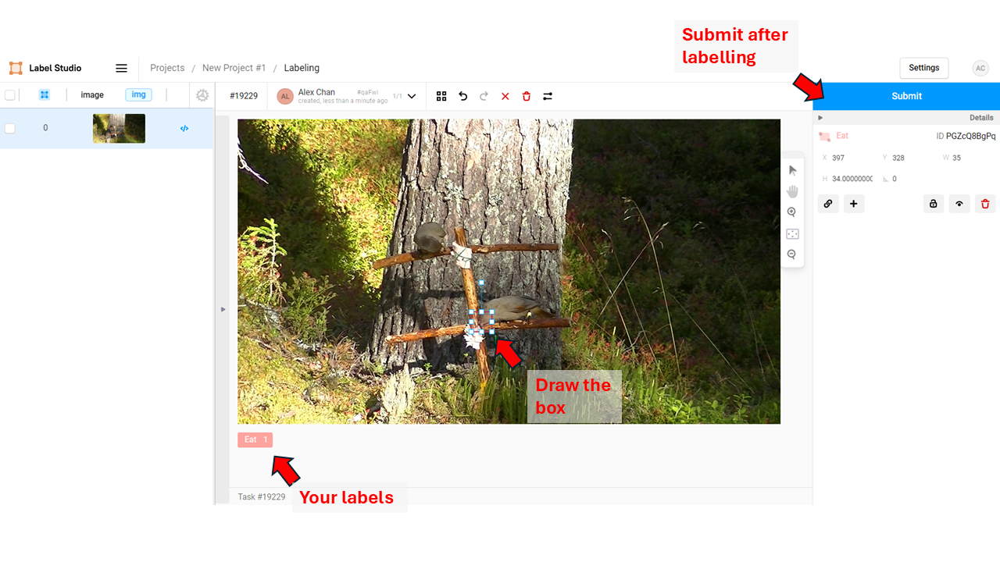
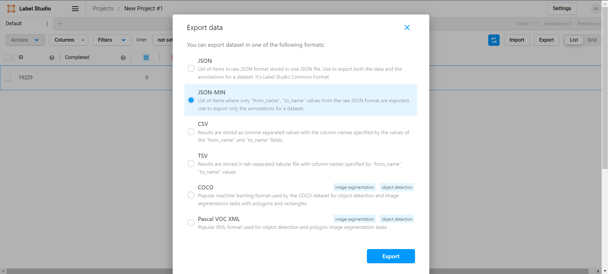
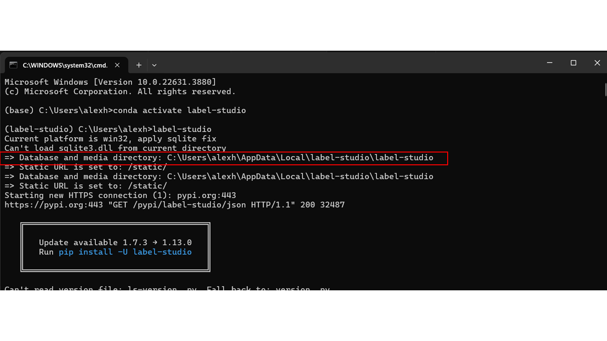
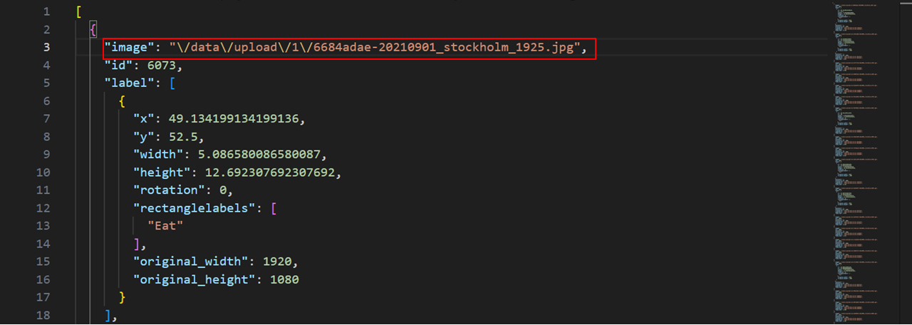

Image annotation
Here are some guidelines for image annotation and drawing bounding boxes for as training data. Here, I will take you through how to use an open-source tool called Label Studio, but for training the YOLO-Behaviour framework, you can use any annotation tool of your choice, as long as your annotations follow the YOLO format.
But be aware, a lot of these online labelling tools actually owns your data after you upload them, so make sure you check the terms and conditions before you use them!
I’ve always used label studio because its fully open source and only saves the data locally, so the current page will guide you through step by step on how to use label studio to label your data.
If you used your own annotation method, I also wrote a guide here on how to format annotations in the correct format and what is required.
Installing and launching label studio
Installing label studio is straightforward, you can follow the official website for installation instructions, but in general, if you have python + pip installed, you can just run:pip install label-studio
The current document was written for label studio version 1.7.3, in case label studio updates in the future and changes everything. If things in this page doesn’t work, this could be a possible reason, so you can install the same older version of label studio using pip install label-studio==1.7.3 to properly follow this tutorial.
After installing, you can launch the tool by simply running:
label-studio
Which should launch the labelling tool on your default browser. If this is your first time, you will need to make an account with an email and password to protect your data.
Starting a labelling project
Click on “Create” on the top right to create a new project
Give the project a name of your choice, and now there are two things you will have to do. First is to upload images, and the second is to set-up the labelling configurations.
Uploading your images. We provide a utility script to random sample frames from a given video input under
./Utils/SampleRandomFrames.py
For example, to sample frames from the sample jay video, you can run this:
### This will sample 10 random frames from Jay_Sample.mp4
python Utils/SampleRandomFrames.py --Input "Data/JaySampleData/Jay_Sample.mp4" --Output "Data/JaySampleData/SampledFrames/" --Frames 10
After sampling images, you can then drag all the images into label studio under the “import” tab. If label studio is throwing an error saying the import is too big, you can work around it by relaunching label studio, but with an extra parameter, by running set DATA_UPLOAD_MAX_MEMORY_SIZE=100000000 in your terminal before you launch label studio.
Define the labelling set-up within label studio. Easiest would probably be choose the “Object Detection with Bounding Boxes” under templates, then modify the classes to your behaviours of interest. Here, since I am using the Jay dataset as a sample, I will define only 1 class, “eat”.
If you are struggling with using the interface to define the task, or if something doesnt work, you can also use the “code” option, where you can customize your labelling interface. Here is a sample for one “Eat” class. To use this, you can just paste this under the “Code” section.
<View>
<Image name="image" value="$image"/>
<RectangleLabels name="label" toName="image">
<Label value="Eat" background="#FFA39E"/></RectangleLabels>
</View>
After setting up the labelling setup, you can then start labelling by clicking the “Label all tasks” tab! If you want a random sample of images, you can also choose “Random sample” under the “settings” tab, to maximize variance in the dataset.
Happy labelling!
Exporting your dataset
After labelling, you have to export the annotations from label studio, then convert it to YOLO format to prepare for model training.To export your annotations, you need 1) the annotations, and 2) the images.
To get the annotations, go to your project page, press export, then click on “JSON-MIN”.
You might also notice there is an option to export as “YOLO” format directly, which can also work assuming you do not wish to split your dataset into train/val/test sets. So here, we still go for the JSON-MIN method to give us more control of the annotations.
This should save a json file in your downloads folder. Copy this annotation file somewhere that make sense, you can even rename it.
Then finally, you need to retrieve the images. Label studio annoyingly renames the images, so we need to look for where label studio stores the file. To find that, you have to scroll up in the console when launching label studio:
If you go to this location on your computer, you can then get access to the images you want, and you can copy them to another folder (your own dataset folder).
The image locations might differ between computers/ systems. One way to check that you can find the correct images is to open the exported json file above, then check the path of the first annotation.
For example, on my laptop, the images were stored under data/upload/1/, so I would copy the 1/ folder to your dataset folder, but making sure you embedd the folder withint empty data/upload folders, so that the images can be read correctly as a relative path.
Finally, we need to convert this into a format that the package we use can read. I provided a script to do that, to convert label studio annotations into YOLO format, as well as splitting the dataset into a train, validation and test set.
To do this you need to run the /Code/1_LabelStudio2YOLO.py script. Here are the parameters for the script:
--Dataset: Path to the dataset folder, location where the images are stored
--JSON: Path to the label studio JSON file
--Output: Output folder for the YOLO dataset
Here is an example to run this in the command line with the Jay sample dataset, which I stored under the LabelStudio folder in the sample.
python Code/1_LabelStudio2YOLO.py --Dataset "./Data/LabelsStudio" --JSON "./Data/LabelStudio/JayAnnotations.json" --Output "./Data/YOLO_Datasets/Jay2"